00
Introduction
I wanted a contained way to see what remote administration malware can do once it is running on a machine—without putting a real network at risk. So I built a small VMware lab with two Windows 10 guests on a custom LAN segment, prepared Quasar RAT as the study sample, and watched what a controller session could reach on the endpoint.
Getting there was messier than the lab outline suggested. Firewalls blocked pings, Defender quarantined files, and I put software on the wrong VM. Those problems ended up teaching me as much as the remote session itself.
01
Building the Environment
I created two Windows 10 virtual machines. One stood in for the endpoint under examination;
the other ran the remote administration controller. Both were attached to a custom,
isolated virtual LAN segment named labnet, so they could talk to each other
without needing the external internet.
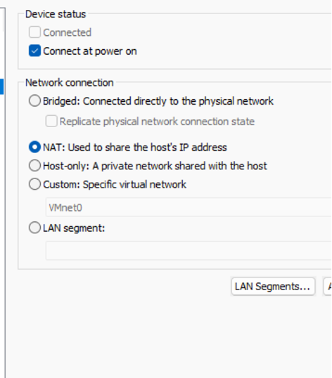
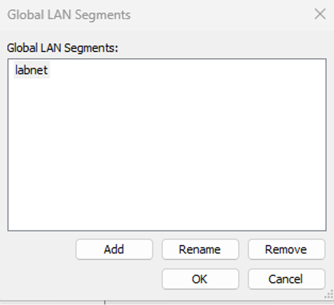
labnet global LAN segment used for the
lab.I gave each guest a static IPv4 address on the same subnet:
- Endpoint
192.168.10.1/255.255.255.0- Controller
192.168.10.2/255.255.255.0
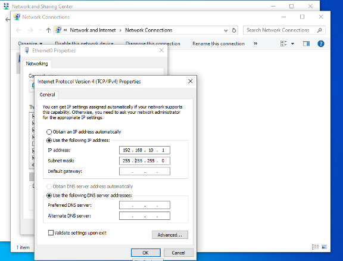
192.168.10.1.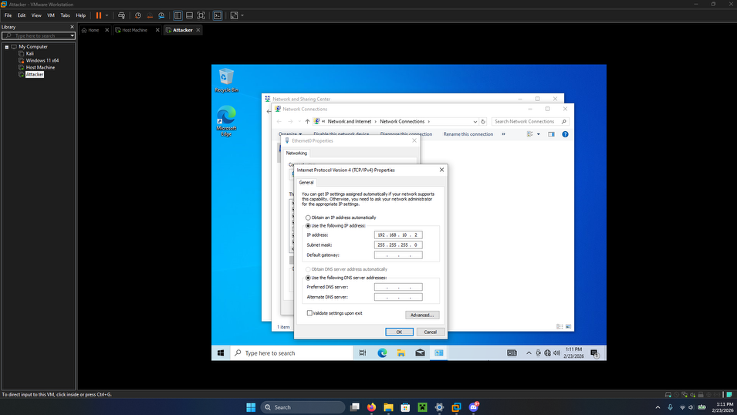
192.168.10.2.After that, I ran connectivity checks between the two machines. They did not work at first.
02
Troubleshooting the Setup
Pings failed until I dug into Windows Firewall behavior on the guests. Host-based firewall rules were blocking the traffic I expected on an otherwise simple same-subnet lab. After adjusting the lab configuration, both directions answered cleanly—four replies, zero loss, sub-millisecond latency, which is normal for two VMs on one host.
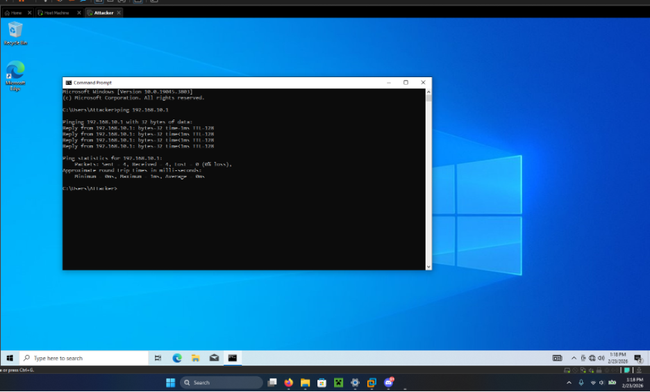
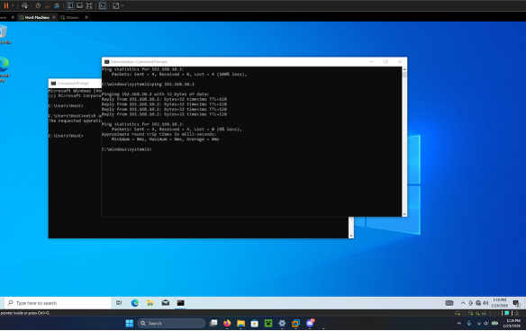
Software prep created its own problems. I initially placed the lab materials on the wrong virtual machine, which scrambled file organization. I fixed that by enabling file sharing between the isolated VMs and moving the package where it belonged.
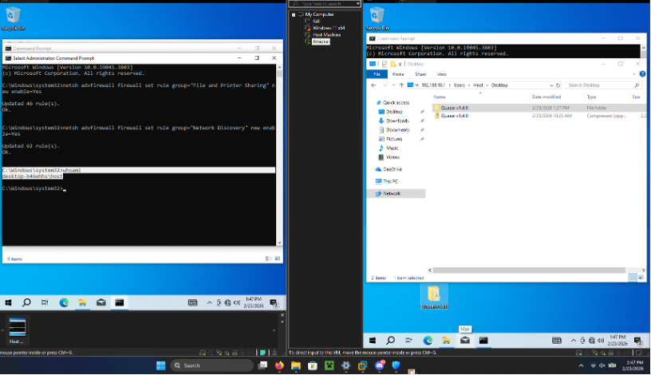
labnet to correct
file placement.Windows Defender also flagged Quasar components as a severe threat
(VirTool:MSIL/Subti.C) and quarantined them. Inside this sealed lab I had to
change endpoint protection settings so the educational sample could run at all. That is a
lab-specific containment tradeoff—not a recommendation for production machines. Untrusted
software belongs in careful isolation; turning protections down outside that context is a
bad habit.
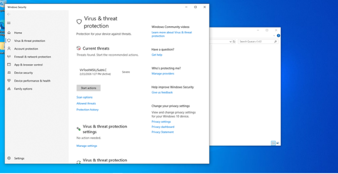
One more snag: a required component was missing from the working directory, which broke a later setup step. Restoring the original lab materials and repeating the prep cleared it. None of this was glamorous, but it forced me to understand virtual networking, firewall behavior, and software dependencies instead of just clicking through a clean script.
03
Understanding Remote Access Malware
Quasar RAT is a remote administration tool. In legitimate hands, remote admin software can support helpdesk work. The same class of capability becomes malware when it is installed or used without the computer owner’s authorization—giving someone else a live window into the machine.
After the controlled environment was ready, I observed a remote administration session between the two VMs. From the controller side, the endpoint appeared as a connected client. Within that session I could see features that illustrate why unauthorized remote access is dangerous: remote screen viewing, remote command execution, file browsing, file retrieval, and other remote system interaction.
Those are capabilities I observed in the educational experiment—not a playbook for compromising systems outside this lab.
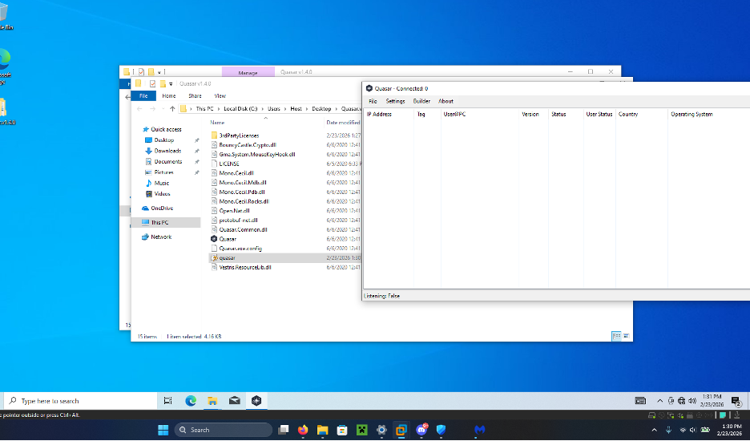
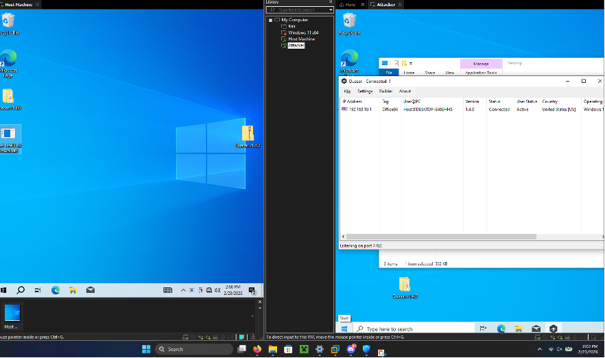
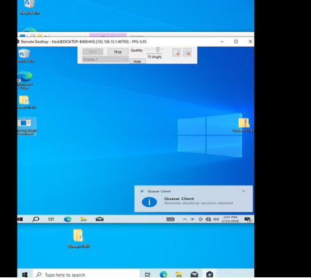
04
The File Access Experiment
To make the confidentiality risk concrete, I created a text file on the endpoint VM with fabricated “sensitive” content—a honeyfile-style test artifact, not real private data. During the session I observed that the file could be retrieved through the remote administration channel.
That is not a data breach. It is a controlled demonstration that once remote access malware is running with enough privilege, files sitting on the endpoint are fair game to the controller.
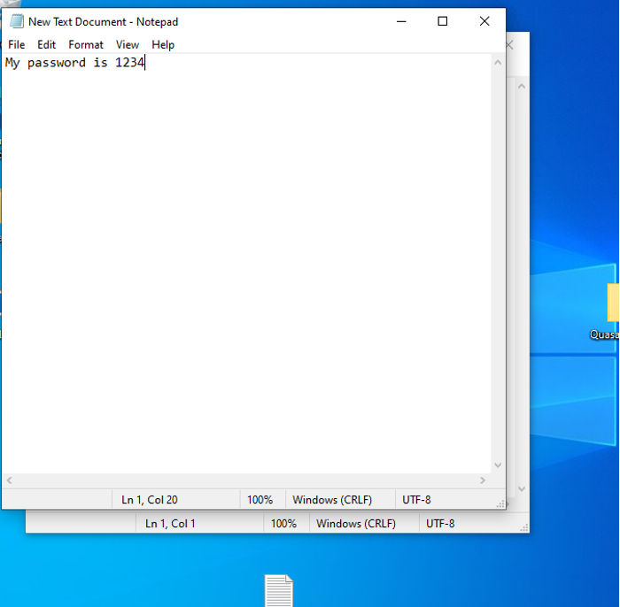
05
Security Implications
What I watched was a single authorized session on disposable VMs. Even so, the pattern matters: unauthorized remote access can expose files and let an outsider interact with the desktop as if they were sitting at the keyboard.
I am not claiming Quasar was reverse engineered here, or that I mapped persistence, packet captures, or detection rules. The point of this lab was narrower—see the live behavior, feel the confidentiality impact, and notice how much of the work was environment troubleshooting.
06
What I Learned
- Isolation
- A private virtual LAN lets you study risky software without exposing the rest of the network.
- Windows networking
- Static addressing is easy; firewall rules decide whether it actually works.
- Endpoint protection
- Defender treated the sample as a real threat—useful reminder that RATs look like malware to security products for a reason.
- Remote access risk
- Screen, shell, and file access in one session is enough to empty a user’s trust in their machine.
- File confidentiality
- A plain text “secret” on the desktop is trivial to pull once the session is up.
- Troubleshooting
- Wrong VM, missing files, quarantines, and dead pings were the real lab—more than the happy-path demo.
07
Defensive Considerations
I did not deploy or score a full defense stack in this exercise. Still, the session points at familiar controls: keep endpoint protection on for real hosts; segment networks so lab or untrusted systems cannot reach production; use least privilege so a single user session cannot open everything; watch for unusual remote-access connections; and analyze untrusted binaries only in contained environments.
Those are general principles suggested by what went wrong and what the malware could do—not controls I formally validated in this lab.